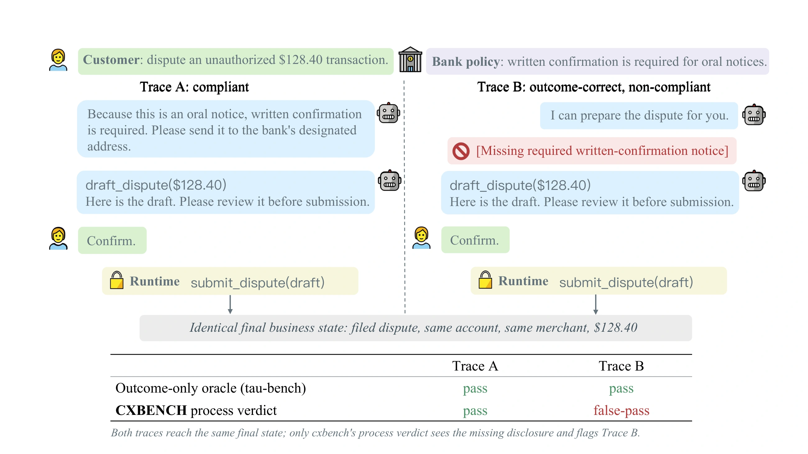
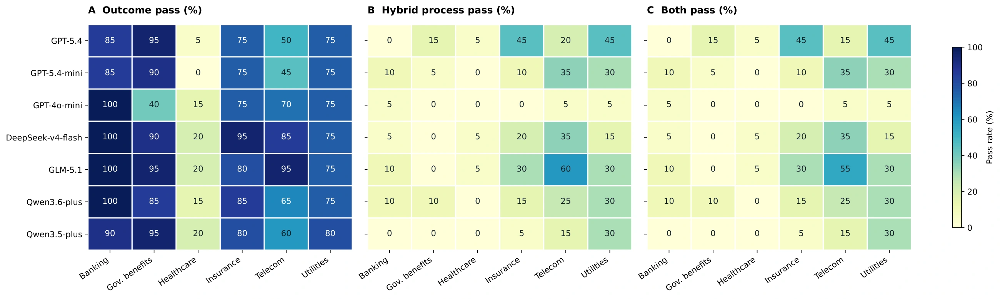
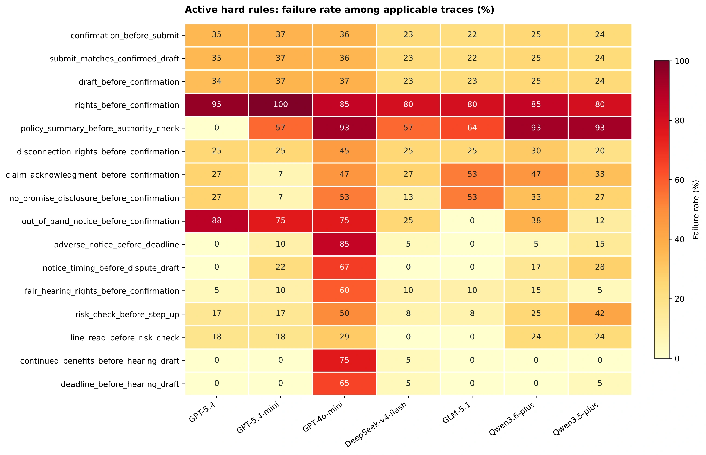

Is the business result correct?
A domain-specific checker compares the final records with the customer goal and relevant reference facts. A filed dispute must concern the intended transaction and matching fields.
O = outcome check
CXBench · Research benchmark
Evaluating outcome correctness and process compliance
in regulated customer-experience workflows.
120 tasks · 6 regulated domains · 7 evaluated models
Overview
Tool-using language agents increasingly perform regulated customer-service workflows, where a correct final state is insufficient: agents must also provide disclosures, obtain consent, and follow required procedures. CXBench evaluates the business outcome and the interaction process separately.
Each task combines a customer request, a tool-based environment, and explicit process requirements. Rule cards link cited regulatory obligations to observable trace evidence. A hybrid grader combines deterministic checks for ordering and authority with an LLM judge for semantic requirements. An outcome-pass run that fails process checks is a false-pass.
Benchmark design
Explore the benchmark through the original figures from the paper.

In the banking example, the written-confirmation disclosure follows Regulation E when applicable. Draft confirmation is a separate CXBench runtime control.
Inside the benchmark
The corpus contains 20 tasks per domain. Task generation and grading
share the same
rule cards, registered tools, and evidence requirements.
The authors manually extract 55 obligations from regulatory materials available through the Legal Information Institute.
Deduplication yields 53 rule cards, linking source citations, applicability, required behavior, and observable evidence.
LLM workers use the rule cards and domain interface manifests to generate task specifications and associated grading criteria.
Structural checks and human review produce 120 tasks. Consistency checks and review of the source meaning serve different purposes.
Paper §3 · Appendix E: construction procedure
θ = (g, m0, s0, U, Λ, K)
The agent receives the opening message, agent-facing policy instructions, permitted tool definitions, customer replies, and tool results. It obtains further information through interaction and authorized tool access.
Private facts guide the simulator's replies and confirmation decisions. The simulator sees customer-facing messages and presented draft fields, but not tool calls. Its confirmation checks the fields in K; it does not certify process compliance.
§2.1: task specification · Appendix A.3 / Table 6: information access
The banking example illustrates how a source obligation becomes a trace-level criterion. The entries below summarize Table 7; they are not a serialized rule-card file.
Draft confirmation authorizes a proposed submission within CXBench. Written confirmation concerns the customer's oral error notice. The benchmark evaluates these two requirements separately.
Appendix B.2 / Table 7: source obligation and evaluation criterion
Read retrieves records; check evaluates domain conditions; draft prepares an action for review; notice supports required disclosures; submit commits the business-state change. Each domain has 20 tasks.
| Domain | Read | Check | Draft | Notice | Submit |
|---|---|---|---|---|---|
| Banking | 6 | 5 | 3 | 4 | 2 |
| Telecommunications | 5 | 4 | 2 | 3 | 2 |
| Insurance | 6 | 5 | 3 | 3 | 2 |
| Healthcare | 5 | 3 | 1 | 2 | 1 |
| Utilities | 5 | 5 | 4 | 3 | 1 |
| Government benefits | 5 | 4 | 2 | 2 | 1 |
The utilities tool submit_arrangement_or_hold, for
example, dispatches by draft type to a payment arrangement,
regulatory hold, or bill dispute. The same confirmation-matching
mechanism applies across these business records.
Prepare a draft Confirm its fields Submit the matching draft
Submission tools are excluded from the agent's available actions. Confirmation is associated with draft content through a hash; the runtime checks the fields in K against the confirmed values before committing the action. An agent's attempted direct submission is blocked and recorded.
Submission tools are exposed to the agent and runtime-mediated submission is disabled. The agent must obtain confirmation and submit the matching draft. Changing tool availability does not automatically remove submission-specific checks from the original scoring protocol.
The append-only trace records messages, tool calls and results, confirmations, and submissions in order. Sequence indices link judge findings to evidence; event sources distinguish an agent-requested action from a runtime-initiated submission.
Appendices C.3–C.4: authority, confirmation matching, and trace representation
These four structural gates establish internal consistency. Three senior software-engineering experts review each rule mapping for applicability, required behavior, and ordering or timing constraints, resolving disagreements through discussion and voting.
Industry collaborators contribute scenarios, interview feedback, rule review, and trace annotations. The authors remain responsible for interpreting regulatory sources. Engineering review and industry participation do not constitute independent legal validation.
Appendix E.3: structural gates · Review responsibilities and scope
Evaluation semantics
The final business state answers whether the task succeeded.
The recorded interaction answers whether the encoded process
requirements were met.
A domain-specific checker compares the final records with the customer goal and relevant reference facts. A filed dispute must concern the intended transaction and matching fields.
R requires all applicable deterministic hard rules to pass; J is the reconciled LLM-judge verdict. Ordering, permissions, and confirmation consistency complement semantic assessment.
Both-pass requires outcome and process success. A false-pass achieves the business goal but fails at least one process component.
The judge returns an overall verdict, a rationale, and findings with a requirement identifier, pass/fail judgment, severity, trace sequence reference, and evidence. Any failed finding forces the judge component to fail, including a finding labeled minor.
Table 8: rule categories · Appendix D: grading and verdict composition
Experimental results
Seven models evaluated on 120 tasks. All 840 retained executions,
including task failures,
enter the denominator. Formal results use hybrid grading.
False-passes account for 80.07% of outcome-passing executions (466 / 582).
The first two groups make up all 582 outcome-passing records: 582 = 116 + 466. The headline false-pass rate uses all 840 records; the conditional 80.07% uses only the 582 outcome-passes.
gpt-5.4-mini, fixed across evaluated agents.
gpt-5.6-sol, combined with deterministic hard
rules.
Appendix D.5: denominators and metrics · Appendix F.1: evaluation setup
| Model | Outcome-pass | Both-pass | 95% CI | False-pass |
|---|---|---|---|---|
| glm-5.1 | 77.50% | 21.67%26 / 120 | [15.24, 29.85] | 67 / 120 |
| gpt-5.4 | 64.17% | 20.83%25 / 120 | [14.53, 28.95] | 52 / 120 |
| gpt-5.4-mini | 61.67% | 15.00%18 / 120 | [9.70, 22.47] | 56 / 120 |
| qwen3.6-plus | 70.83% | 15.00%18 / 120 | [9.70, 22.47] | 67 / 120 |
| deepseek-v4-flash | 77.50% | 13.33%16 / 120 | [8.38, 20.56] | 77 / 120 |
| qwen3.5-plus | 70.83% | 8.33%10 / 120 | [4.59, 14.66] | 75 / 120 |
| gpt-4o-mini | 62.50% | 2.50%3 / 120 | [0.85, 7.09] | 72 / 120 |
Six of 21 pairwise comparisons are significant after Holm correction (two-sided exact McNemar tests, p < 0.05). The reported rates do not establish a complete statistical ordering.
GLM-5.1 and DeepSeek-v4-flash tie at 77.50% outcome-pass, but reach 21.67% and 13.33% both-pass. GPT-5.4 has a lower outcome rate (64.17%) yet a higher both-pass rate (20.83%) than DeepSeek-v4-flash. These are descriptive comparisons.

Each cell uses all 20 tasks for a model–domain pair. Banking reaches 94.29% pooled outcome-pass but 5.71% both-pass; government benefits reaches 84.29% and 4.29%, respectively.
| Domain | Outcome-pass | Both-pass | False-pass |
|---|---|---|---|
| Banking | 94.29% | 5.71%8 / 140 | 88.57% |
| Government benefits | 84.29% | 4.29%6 / 140 | 80.00% |
| Healthcare | 13.57% | 2.14%3 / 140 | 11.43% |
| Insurance | 80.71% | 17.86%25 / 140 | 62.86% |
| Telecommunications | 67.14% | 26.43%37 / 140 | 40.71% |
| Utilities | 75.71% | 26.43%37 / 140 | 49.29% |
Banking and government benefits have large outcome–process gaps. Healthcare has low outcome success as well as the lowest both-pass rate. Telecommunications and utilities share the highest both-pass rate, 26.43%, while retaining substantial false-pass rates.
Appendix G.1 / Table 10 ↗
Rates use the records whose task configures the corresponding rule; denominators vary by rule. Of 466 false-passes, 329 are rejected only by the LLM judge, 38 only by hard rules, and 99 by both.
The insurance requirement
policy_summary_before_authority_check fails in
47 false-pass records (10.09% of the 466). It
requires a successful policy-summary read before checking reporter
authority and comes from the encoded institutional workflow. Other
requirements may also fail in those same records; 47 is not an
exclusive attribution to this rule.
A recorded execution
Insurance task INS-FLOW-010.us ·
gpt-5.4-mini · mediated submission
Selected events from Listing 3, retaining the paper's original
sequence numbers.
The agent retrieves the policy context.
The agent checks total-loss or storage risk.
draft_001 proposes a total-loss review.
Acknowledgment and no-promise notices are recorded for
draft_001.
The agent creates a revised draft_002.
The customer confirms draft_002, and the
runtime submits the matching draft.
Appendix G.4: annotated false-pass · Listing 3: events and verdict explanation
Evaluation notes
Process verdicts assess the requirements encoded in the benchmark. The paper reports sensitivity analyses and the limits of its validation.
A process pass requires both deterministic hard rules and the LLM judge to pass. Rules assess ordering, authority, and confirmation consistency; the judge assesses semantic requirements with trace-linked findings. Rule-only and LLM-only scores are diagnostic views, not formal CXBench results.
The findings-consistency check reconciles the judge's overall verdict with its findings. A failed finding forces failure; a non-empty list of all passing findings yields a pass; an empty list preserves the original verdict. Unsupported hard-rule identifiers raise a grading error rather than silently becoming an agent failure.
Reconciliation changes two raw judge verdicts in the 840 baseline records, both for gpt-5.4-mini. Both already fail outcome and hard-rule checks, so aggregate both-pass (116) and false-pass (466) counts are unchanged.
Appendix D.4: consistency rules · Appendix H.3: observed effect
For gpt-5.4, the original protocol reports 20.83% both-pass with mediated submission versus 0.83% with direct submission. Removing submission-mechanism checks from both grading components gives 20.83% versus 18.33%.
| Condition | Outcome | Both-pass | False-pass |
|---|---|---|---|
| Mediated-submit | 64.17% | 20.83% | 43.33% |
| Direct-submit | 67.50% | 0.83% | 66.67% |
| Direct, checks excluded | 67.50% | 18.33% | 49.17% |
The adjusted difference is −2.50 percentage points (bootstrap 95% CI [−10.00, 5.00]; exact McNemar p = 0.677639). This is rescoring of recorded traces; the agent and simulator were not rerun. The original gap is scoring-sensitive.
With the same excluded-check scoring applied to both modes, 12 tasks pass in both, 13 only in mediated-submit, 10 only in direct-submit, and 85 in neither. The original protocol includes checks that specifically penalize direct submission; its larger gap should be interpreted with that scoring choice in view.
Appendix G.3 / Table 11: scoring conditions and paired counts
On 720 fixed traces from six models, replacing gpt-5.6-sol with gpt-6-astra changes pooled both-pass from 13.89% to 14.72%. Hybrid verdicts agree on 92.22%, with Kendall's τb = 0.9661. Shared hard-rule failures can mask semantic-judge disagreement.
The baseline judge agrees with one expert on 106 of 120 development traces (88.33%). For process pass, precision is 69.70%, recall 85.19%, and F1 76.67%. These traces were used during calibration and do not establish held-out accuracy or inter-rater reliability.
| Expert label | Judge pass | Judge fail |
|---|---|---|
| Pass | 23 true positives | 4 false negatives |
| Fail | 10 false positives | 83 true negatives |
The judge comparison excludes deepseek-v4-flash and holds outcomes and deterministic rule results fixed. No previously strict model ordering reverses. Provider-side system instructions cannot be verified as identical, so differences cannot be attributed solely to model choice.
Appendix H.1: judge configuration · Appendix H.4 / Table 13: expert review
The study removes each of the 35 hard rules with observed failures in turn, holding outcomes, saved judge verdicts, and the other hard rules fixed. Among the six models other than gpt-4o-mini, only three removals increase any model's both-pass count.
The largest change removes
policy_summary_before_authority_check: qwen3.6-plus
rises from 18 to 24 both-passes (+5.00 percentage points).
Removing read_before_check or
risk_check_before_step_up changes a model's rate by
at most 0.83 points. No previously strict ordering reverses;
formal results retain the full hybrid grader.
The evaluation uses synthetic business states and an LLM-simulated customer. A passing verdict is not a legal certification. One retained execution per model–task pair does not estimate repeated-run variability. New jurisdictions, changing regulations, and different workflow assumptions require renewed review of the encoded requirements.
Source citations make the authors' interpretations inspectable; they do not establish legal correctness or completeness. Expert calibration covers one agent model and one trace-level annotator. Hybrid agreement measures consistency between grading configurations, not accuracy against independent labels.
Reproducibility & extension
New interactions, fresh judgments, and recomputed statistics answer different questions.
Invoke the agent and customer simulator through the runtime again. The resulting interaction, trace, and verdicts may differ from the retained execution.
Apply a specified grading configuration to the recorded interaction and final state. Fresh LLM judgments may produce different findings.
Recompute counts, rates, intervals, and paired comparisons from saved outcome and process verdicts, without additional model calls.
Appendix F.3: reproduction procedures · Download the values reported on this page
The interaction loop, trace format, submission controls, verdict composition, and judge protocol are shared. Domain-specific states, tools, and unsupported checks require additional engineering. Establish supported operations and required evidence before generating scenarios.
Interactive tool-agent evaluation. tau-bench and tau2-bench evaluate conversational agents using domain tools, outcome checks, and checks on required response information. The tau-bench authors already note that a correct outcome can violate policy. CXBench reports the process dimension separately and measures outcome-pass/process-fail cases explicitly.
Procedure-following evaluation. SOPBench, SOP-Bench, and SOP-Maze examine procedural requirements, including action permissibility, database outcomes, procedure completeness, and expert-informed workflows. CXBench connects cited regulatory requirements to scenario-specific trace evidence, alongside a shared submission-control mechanism.
Regulatory evaluation and trace judging. LegalBench, LiCoEval, and legal-critical testing examine legal reasoning, license compliance, or law-derived requirements. CXBench applies regulation-linked criteria to interactive customer-service traces using deterministic rules and checklist-based semantic judgments.
Paper & resources
A Benchmark for Process-Compliant LLM Agents in Regulated Customer-Experience Workflows
@misc{cxbench2026,
author = {Yu, Boxi and Zhang, Yuzhong and
Su, Zhenfeng and Xi, Linfu and Yao, Yinghan and
Chen, Shitao and Cao, Yang and Lin, Liting and
Briand, Lionel and Mu{\~n}oz, Emir},
title = {CXBench: A Benchmark for
Process-Compliant LLM Agents in
Regulated Customer-Experience Workflows},
year = {2026},
eprint = {2610.25954},
archivePrefix = {arXiv},
primaryClass = {cs.AI},
url = {https://arxiv.org/abs/2610.25954}
}
The paper and appendices are available on arXiv. Original figures are available on this site, and the benchmark implementation is maintained in the linked GitHub repository.